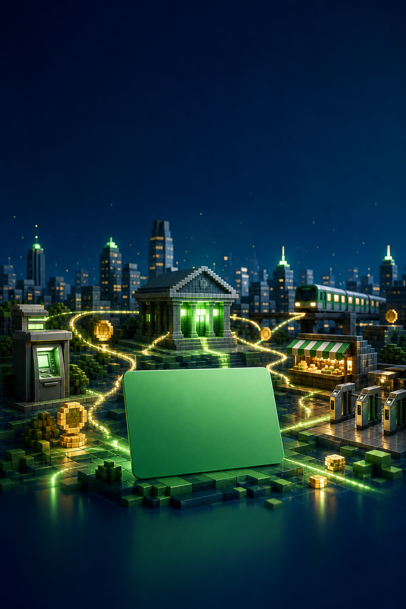
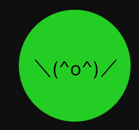
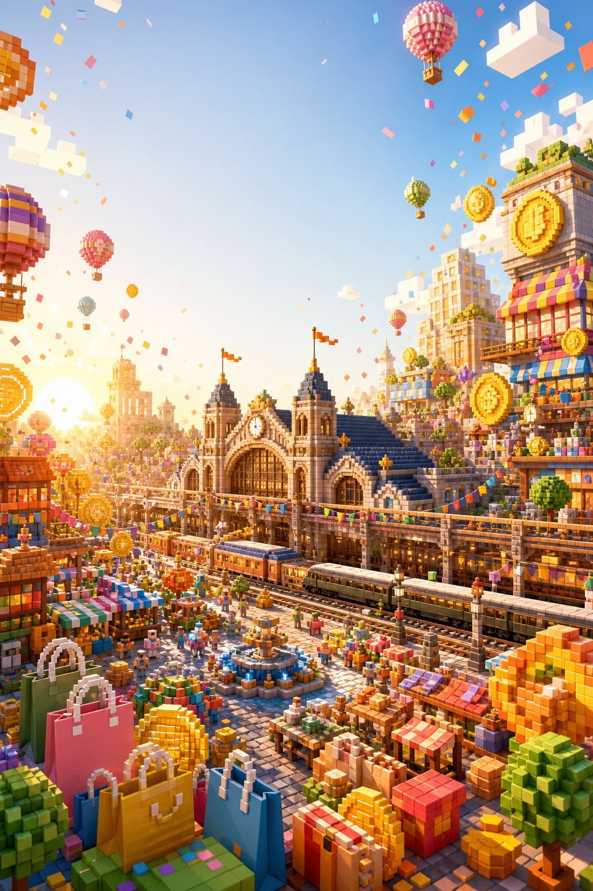
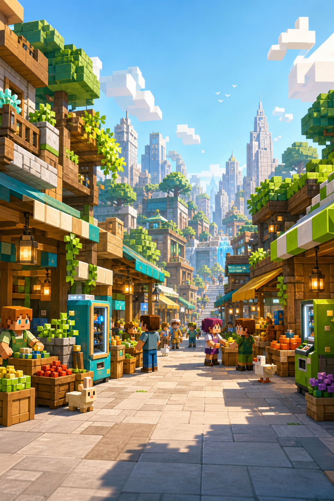
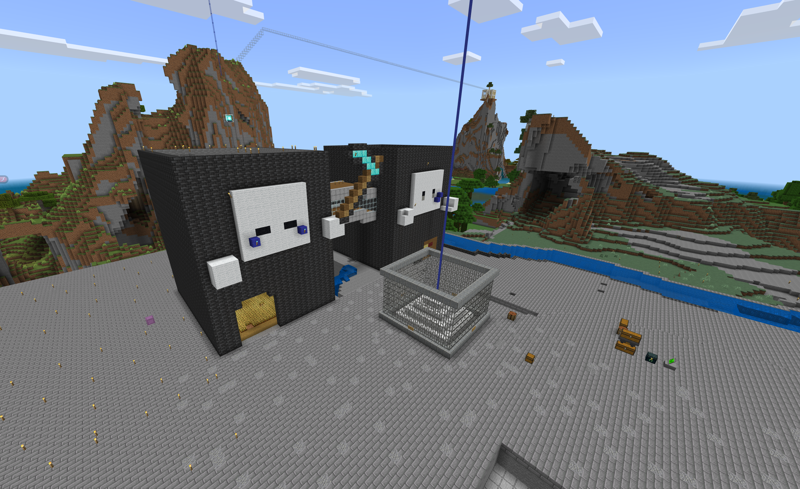
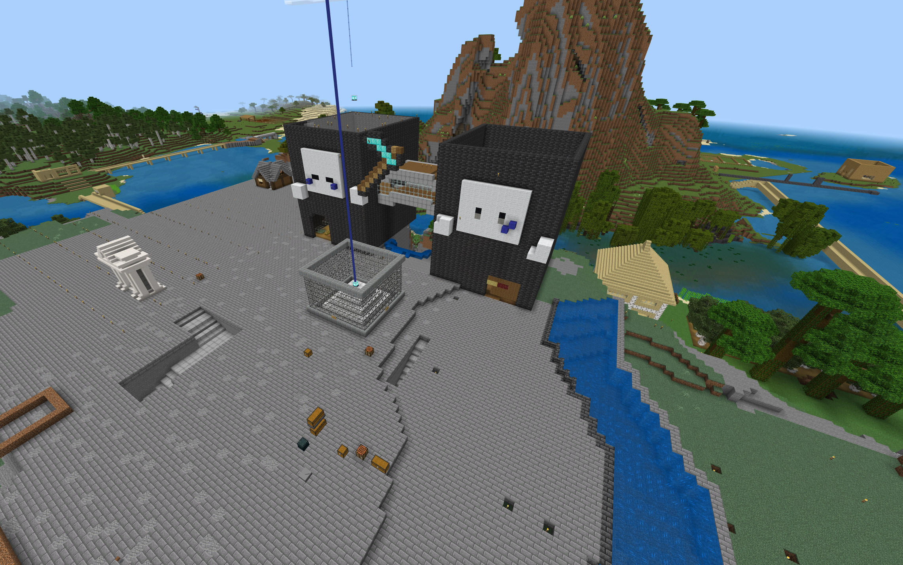
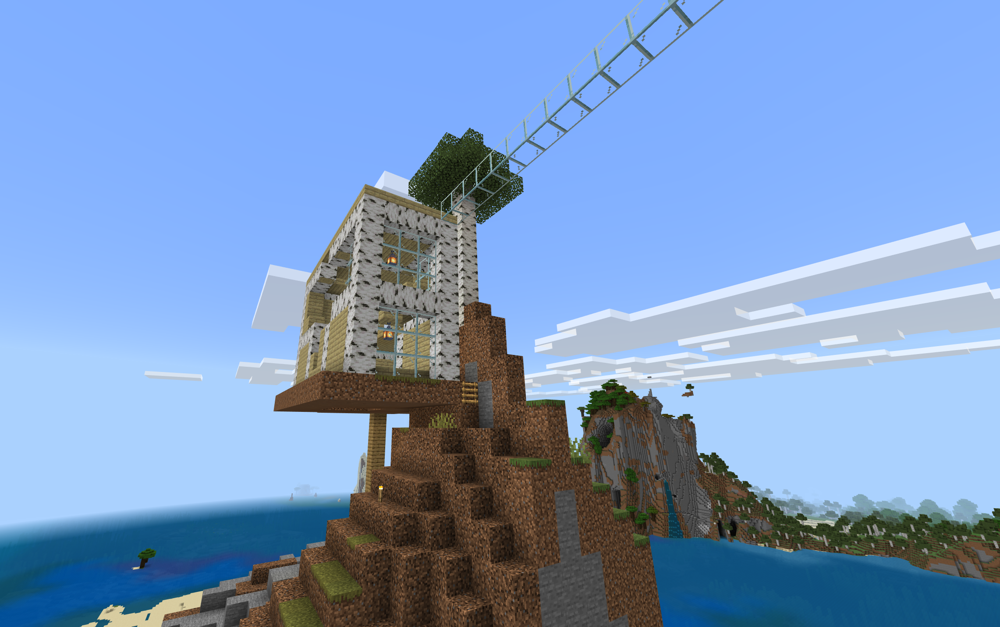
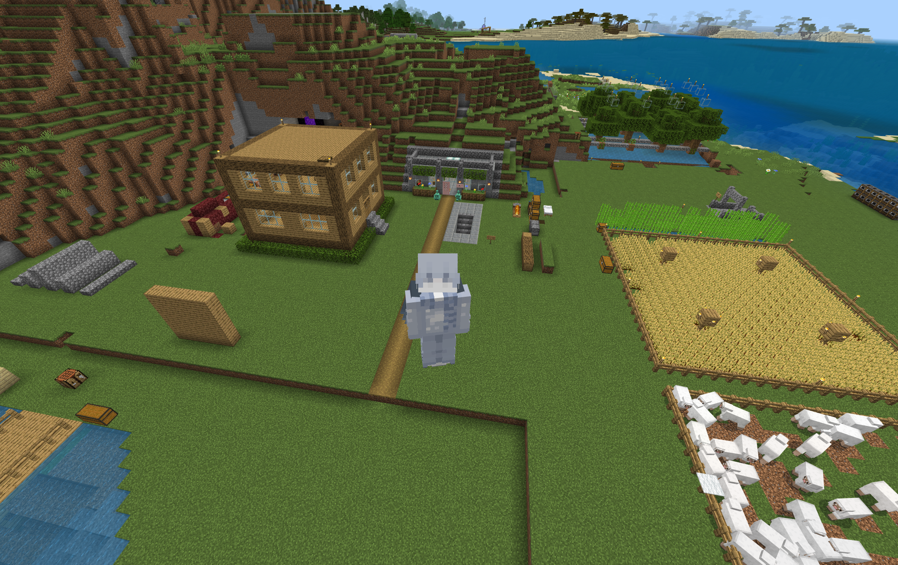

OWATAECONOMY SERVER2026 SUMMER 新規住民募集中
マイクラ統合版の参加型経済サーバー経済は、
まだ終わってない。
オワタ経済サーバーとは
プレイヤーが働き、店を開き、株や鉄道会社を経営しながら、みんなで街と経済を育てていくMinecraft統合版の本格経済サーバーです。
銀行も、株も、鉄道会社も。全部マイクラで。
遊ぶだけだった世界で、今度はあなたが経済を動かそう。
Minecraft 統合版初心者歓迎Discord案内あり

PLAYER ECONOMY街の主役は、プレイヤー。
WELCOMEこの夏、最初の一歩を。
01銀行・送金
02IC・キャッシュレス
03店舗・土地
04株式・会社
05鉄道経営
HOW IT MOVES 経済が回る
あなたの行動が、
次の誰かの仕事になる。
稼いで終わりではありません。買い物、投資、移動、街づくりがつながり、プレイヤー同士で経済が動き続けます。
01WORK働く
仕事で報酬を得る
→02BANK貯める
銀行とICで管理
→03SHOP使う
店とサービスを利用
→04INVEST育てる
株や会社へ投資
→05CITY広がる
鉄道と街が成長
4 CORE SYSTEMS この世界でできること
マイクラの中に、
もうひとつの経済圏。
簡単な買い物から本格的な経営まで。好きな深さで参加できるから、初めての人も、長く遊びたい人も居場所をつくれます。

仕事とレベル
木こり・採掘・整地など、働きながら成長できる。
国家と国内チャット
仲間と国をつくり、コミュニティで街を動かす。
自販機・NPC店舗
プレイヤーがいない時間も商品を販売できる。
送金・返金・定期決済
口座を中心に、サービス運営まで広げられる。
2つのワールド
メイン world2 とサブ subworld を使って遊べる。
Discord連携
サーバー内外の案内とコミュニケーションをつなぐ。
※ 掲載ビジュアルの一部は、サーバーの遊び方を表現したイメージです。
CHOOSE YOUR WAY 何になる？
遊び方に、正解はない。
SHOP OWNER
売れる仕組みを、自分でつくる。
土地を選び、商品を並べ、価格を決める。プレイヤーショップや自動販売機、NPC店舗を使って、自分だけの商売を育てよう。
- 1土地を探す
- 2商品を仕入れる
- 3お店を育てる
SUMMER ROADMAP 夏休み企画案
この夏、街に
4つの波を起こす。
新しい人が始めやすく、住民同士が出会いやすいイベント構成です。日程と内容は運営決定後に正式告知します。
LATE JUL · 企画案
新住民スタートダッシュ
初心者ツアー、仕事体験、最初の目標づくり
EARLY AUG · 企画案
サマーマーケット
期間限定市場、初心者出店枠、買い回り企画
MID AUG · 企画案
鉄道スタンプラリー
各駅を巡りながら街と店を知る回遊イベント
LATE AUG · 企画案
OWATA ECONOMY FES
表彰、合同セール、街の発展発表で夏を締める
30 SEC STORIES 動画で見る
30秒で、
この街の空気へ。
YouTube Shorts・TikTok向けに制作した縦型CM。気になったテーマから再生してください。
01
CASHLESS DASHIC決済で街がつながる
02
RAILWAY HERO一本の路線が街を変える
03
WELCOME HOME初めての居場所を見つける
動画内BGM：DOVA-SYNDROME
REAL SERVER ここから始まる
完成された都市じゃない。
だから、あなたの場所がある。




FAQ 参加前によくある質問
はじめの不安を、
ここで解決。
01どのMinecraftで参加できますか？＋
Minecraft統合版向けのサーバーです。対応バージョンや接続先はDiscordで最新情報を案内します。
02経済サーバーが初めてでも大丈夫？＋
もちろん大丈夫です。まず仕事でお金を貯め、銀行やIC決済に触れるところから始められます。
03メインとサブ、2つのワールドがあるの？＋
メインワールド（world2）とサブワールド（subworld）の2つがあります。最新案内は参加時にDiscordで確認してください。
04参加方法はどこで確認できますか？＋
参加方法、ルール、接続先をDiscordにまとめています。QRコードまたは参加ボタンから確認できます。
05今のサーバーの様子を見られますか？＋
ライブマップで、読み込み済みの街と現在オンラインのプレイヤー位置を確認できます。サーバー停止中も保存済みの地図は閲覧できます。
サーバーライブマップを見る ↗JOIN THE CITY 新規住民募集中
店を持て。
土地を買え。
会社を興せ。
参加方法・ルール・接続先はDiscordで案内中。まずは街の雰囲気をのぞきに来てください。